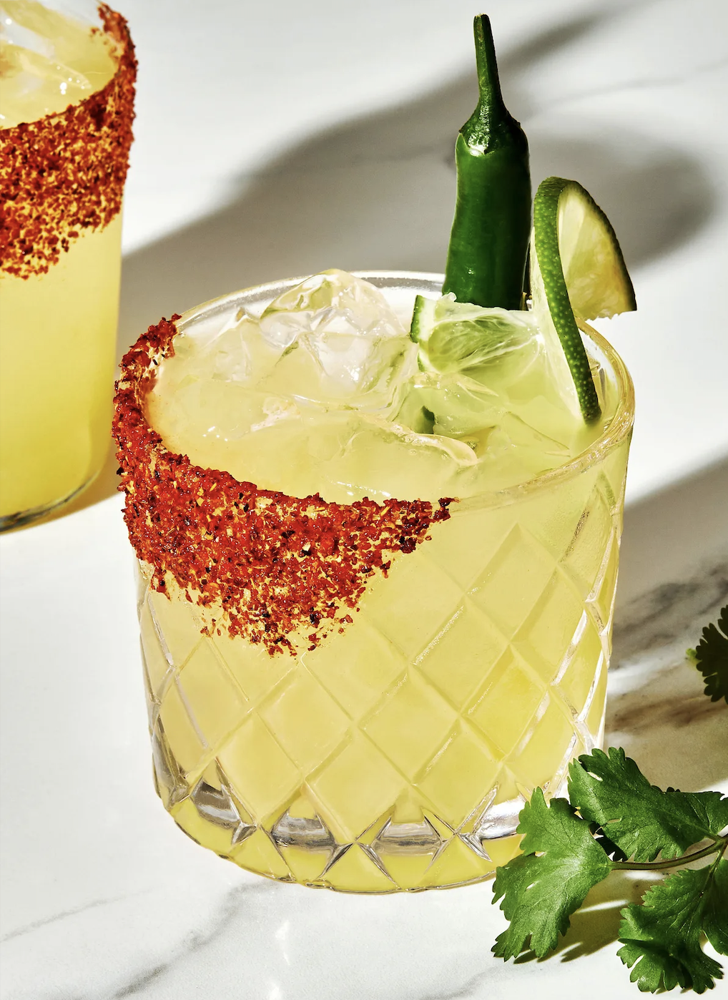

Margarita

Hot and Spicy Margarita
A spicy margarita is a vibrant twist on the classic cocktail, igniting the taste buds with a fiery kick. It builds upon the traditional margarita's foundation of tequila, lime juice, and orange liqueur, but adds chili peppers for a thrilling heat. The intensity can be customized by using different peppers, from the mild jalapeño to the scorching habanero. This invigorating drink is perfect for those who crave an adventurous and bold flavor experience.
Ingredients
- 1 serrano pepper, sliced
- 1 1/2 ounces fresh lime juice (2 limes)
- 2 ounces tequila blanco
- 1/2 ounce triple sec
- 3 springs fresh cilantro (optional)
- 2 dashes Angostura bitters
- Tajin seasion, for serving
- Lime wedge, for serving
Method
-
In a cocktail shaker, muddle the serrano pepper (reserve one slice for serving) with the lime juice, about 30 seconds. Add tequila, triple sec, cilantro and bitters. Fill the cocktail shaker with ice, cover, and shake vigorously until the outside of the shaker is very cold, about 30 seconds.
-
Place the Tajín on a small plate. Rub the rim of a rocks glass with the lime wedge, then dip the glass rim into the Tajín to coat. Fill the glass with ice and pour in the margarita. Garnish with the lime wedge and reserved pepper slice. Serve immediately.